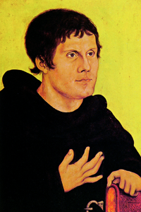
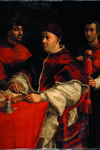
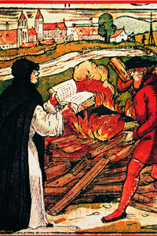
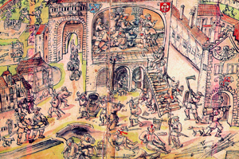
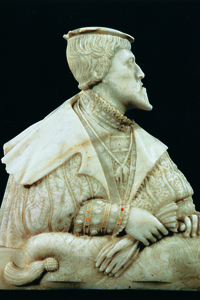
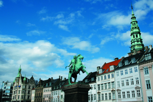
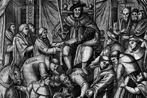

Lezione 12  Riforma e controriforma
Riforma e controriforma

-
90
330
-
240
320
-
150
280
-
160
250
-
120
260
-
60
280
-
80
150
-
120
310
-
120
350
-
100
120

WITTEMBERG
Il pittore Lucas Cranach il Vecchio è amico di Martin Lutero, e con i suoi dipinti e le incisioni diviene una sorta di interprete visivo del suo pensiero e delle dottrine della riforma: dipinge questo splendido ritratto di Lutero giovane negli anni Venti del Cinquecento. 
ROMA
Papa Leone X è un grande mecenate delle arti: ne è testimonianza, tra le molte, questo dipinto di Raffaello che lo ritrae insieme a due cardinali. Nel 1520, respinge le 95 tesi di Lutero con la bolla Exurge Domine, in cui invita Lutero alla ritrattazione delle tesi; per tutta risposta Lutero brucia la bolla. Papa Leone X scomunica Lutero.
GERMANIA
Lutero brucia la bolla di scomunica e altri libri di diritto canonico in un’incisione colorata cinquecentesca: si bruciano i libri come nel Medioevo si bruciavano gli eretici. Anche la gerarchia cattolica adotterà pochi decenni dopo la stessa immagine simbolica; ma ovviamente a venir bruciati saranno i libri dei protestanti.
BADEN
Le rivendicazioni religiose si intrecciano con istanze sociali. La cosiddetta “guerra dei contadini” infiamma la Germania tra il 1520 e il 1525, e viene duramente sconfessata da Lutero. Il cruento episodio raffigurato in questa xilografia è il saccheggio dell’abbazia di Wissenau. Sanguinose repressioni ristabiliscono l’ordine.
AUGUSTA
L’imperatore Carlo V, qui ritratto in un bellissimo busto in alabastro di scuola tedesca, indice la dieta di Augusta nel 1530 per tentare di pacificare i tumulti sociali e religiosi in Germania. I luterani presentano la cosiddetta Confessione di Augusta, redatta da Filippo Melantone, nella quale vengono fissati i principi luterani: per la salvezza è sufficiente la sola fede, i testi sacri si leggono senza intermediazioni, si accoglie il libero esame, si rifiutano i sacramenti (esclusi il battesimo e l’eucarestia). L’imperatore tuttavia la respinge, attirandosi così l’ostilità dei principi luterani e di undici città tedesche, che nel 1531 si uniranno contro di lui nella Lega di Smalcalda.
COPENAGHEN
Le severe e armoniose architetture del centro storico di Copenhagen con il monumento al vescovo Absalon. La Danimarca aderisce alla Riforma protestante nel 1536, mentre la Svezia aveva aderito già nel 1527.
INGHILTERRA
L’Inghilterra aderisce alla Riforma nel 1534, quando il papa Clemente VII scomunica il re Enrico VIII a causa del matrimonio con Anna Bolena: è lo Scisma Anglicano. In questa incisione satirica cinquecentesca vediamo Enrico che poggia i piedi sul pontefice.WITTEMBERG
Martin Lutero affigge alla porta della cattedrale di Wittenberg le 95 tesi in cui sottolinea la degenerazione morale e la corruzione della Chiesa cattolica legata alla vendita delle indulgenze. Afferma che la salvezza non può essere acquistata, ma avviene per la sola fede nella redenzione compiuta da Cristo. Queste tesi mettono in discussione principi fondamentali della Chiesa come istituzione: il papato, la gerarchia, il sacerdozio, la messa. Grazie alla stampa vengono diffuse molto rapidamente, e vengono accolte con un clamoroso successo.EISENACH
1521: L’imperatore Carlo V condanna Lutero mettendolo al bando dai suoi domini. In sua difesa interviene il principe Federico di Sassonia, detto il Saggio. 1522: Lutero traduce in tedesco il Nuovo Testamento, poiché afferma che la Bibbia debba essere comprensibile a tutti. Lutero e i suoi seguaci vengono chiamati i “protestanti”. INGHILTERRA
Anche l’Inghilterra si stacca da Roma, anche se per questioni propriamente politiche e di potere. Il re Enrico VIII dà vita alla Chiesa anglicana: la Chiesa inglese rompe con Roma e viene nazionalizzata, il re diventa il capo della Chiesa inglese, che mantiene tuttavia le caratteristiche dell’ortodossia cattolica.